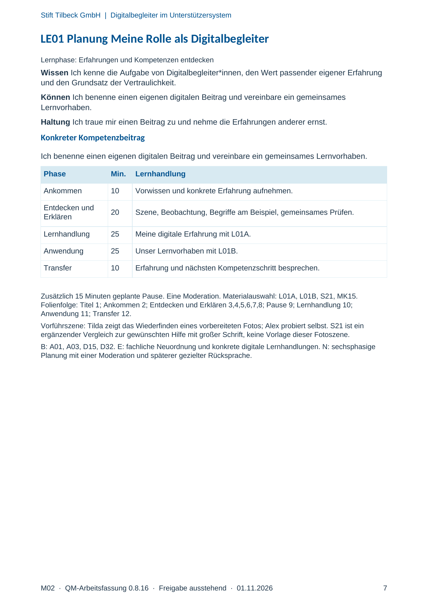
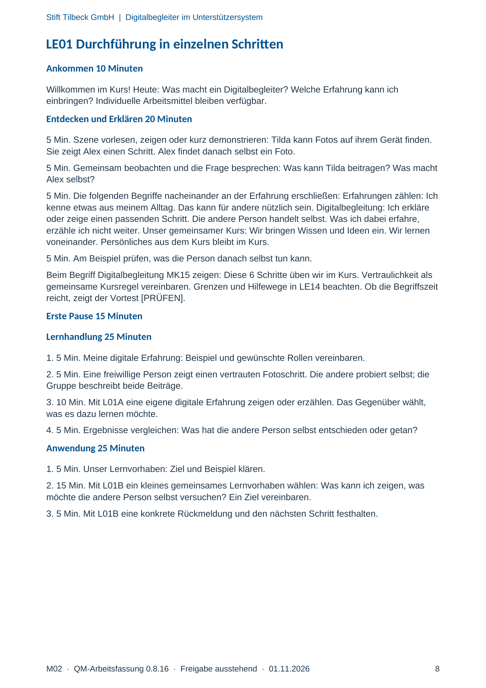
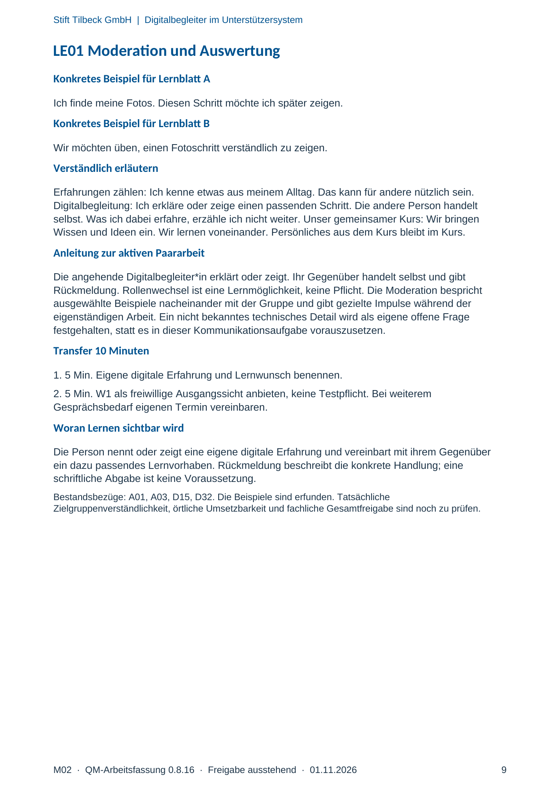

M02 · Originalseite 7, 8, 9
Handbuch und Muster
Gezielte Original-Druckauswahl.
Fragen und Ankreuzfelder werden auf dem Ausdruck bearbeitet. Die Lesefassung speichert keine Antworten.
Lesefassung · Seite 7
Stift Tilbeck GmbH | Digitalbegleiter im Unterstützersystem
M02 · QM-Arbeitsfassung 0.8.16 · Freigabe ausstehend · 01.11.2026 7
LE01 Planung Meine Rolle als Digitalbegleiter
Lernphase: Erfahrungen und Kompetenzen entdecken
Wissen Ich kenne die Aufgabe von Digitalbegleiter*innen, den Wert passender eigener Erfahrung
und den Grundsatz der Vertraulichkeit.
Können Ich benenne einen eigenen digitalen Beitrag und vereinbare ein gemeinsames
Lernvorhaben.
Haltung Ich traue mir einen Beitrag zu und nehme die Erfahrungen anderer ernst.
Konkreter Kompetenzbeitrag
Ich benenne einen eigenen digitalen Beitrag und vereinbare ein gemeinsames Lernvorhaben.
Phase Min. Lernhandlung
Ankommen 10 Vorwissen und konkrete Erfahrung aufnehmen.
Entdecken und
Erklären 20 Szene, Beobachtung, Begriffe am Beispiel, gemeinsames Prüfen.
Lernhandlung 25 Meine digitale Erfahrung mit L01A.
Anwendung 25 Unser Lernvorhaben mit L01B.
Transfer 10 Erfahrung und nächsten Kompetenzschritt besprechen.
Zusätzlich 15 Minuten geplante Pause. Eine Moderation. Materialauswahl: L01A, L01B, S21, MK15.
Folienfolge: Titel 1; Ankommen 2; Entdecken und Erklären 3,4,5,6,7,8; Pause 9; Lernhandlung 10;
Anwendung 11; Transfer 12.
Vorführszene: Tilda zeigt das Wiederfinden eines vorbereiteten Fotos; Alex probiert selbst. S21 ist ein
ergänzender Vergleich zur gewünschten Hilfe mit großer Schrift, keine Vorlage dieser Fotoszene.
B: A01, A03, D15, D32. E: fachliche Neuordnung und konkrete digitale Lernhandlungen. N: sechsphasige
Planung mit einer Moderation und späterer gezielter Rücksprache.
Originalseite ansehen

Lesefassung · Seite 8
Stift Tilbeck GmbH | Digitalbegleiter im Unterstützersystem
M02 · QM-Arbeitsfassung 0.8.16 · Freigabe ausstehend · 01.11.2026 8
LE01 Durchführung in einzelnen Schritten
Ankommen 10 Minuten
Willkommen im Kurs! Heute: Was macht ein Digitalbegleiter? Welche Erfahrung kann ich
einbringen? Individuelle Arbeitsmittel bleiben verfügbar.
Entdecken und Erklären 20 Minuten
5 Min. Szene vorlesen, zeigen oder kurz demonstrieren: Tilda kann Fotos auf ihrem Gerät finden.
Sie zeigt Alex einen Schritt. Alex findet danach selbst ein Foto.
5 Min. Gemeinsam beobachten und die Frage besprechen: Was kann Tilda beitragen? Was macht
Alex selbst?
5 Min. Die folgenden Begriffe nacheinander an der Erfahrung erschließen: Erfahrungen zählen: Ich
kenne etwas aus meinem Alltag. Das kann für andere nützlich sein. Digitalbegleitung: Ich erkläre
oder zeige einen passenden Schritt. Die andere Person handelt selbst. Was ich dabei erfahre,
erzähle ich nicht weiter. Unser gemeinsamer Kurs: Wir bringen Wissen und Ideen ein. Wir lernen
voneinander. Persönliches aus dem Kurs bleibt im Kurs.
5 Min. Am Beispiel prüfen, was die Person danach selbst tun kann.
Beim Begriff Digitalbegleitung MK15 zeigen: Diese 6 Schritte üben wir im Kurs. Vertraulichkeit als
gemeinsame Kursregel vereinbaren. Grenzen und Hilfewege in LE14 beachten. Ob die Begriffszeit
reicht, zeigt der Vortest [PRÜFEN].
Erste Pause 15 Minuten
Lernhandlung 25 Minuten
1. 5 Min. Meine digitale Erfahrung: Beispiel und gewünschte Rollen vereinbaren.
2. 5 Min. Eine freiwillige Person zeigt einen vertrauten Fotoschritt. Die andere probiert selbst; die
Gruppe beschreibt beide Beiträge.
3. 10 Min. Mit L01A eine eigene digitale Erfahrung zeigen oder erzählen. Das Gegenüber wählt,
was es dazu lernen möchte.
4. 5 Min. Ergebnisse vergleichen: Was hat die andere Person selbst entschieden oder getan?
Anwendung 25 Minuten
1. 5 Min. Unser Lernvorhaben: Ziel und Beispiel klären.
2. 15 Min. Mit L01B ein kleines gemeinsames Lernvorhaben wählen: Was kann ich zeigen, was
möchte die andere Person selbst versuchen? Ein Ziel vereinbaren.
3. 5 Min. Mit L01B eine konkrete Rückmeldung und den nächsten Schritt festhalten.
Originalseite ansehen

Lesefassung · Seite 9
Stift Tilbeck GmbH | Digitalbegleiter im Unterstützersystem
M02 · QM-Arbeitsfassung 0.8.16 · Freigabe ausstehend · 01.11.2026 9
LE01 Moderation und Auswertung
Konkretes Beispiel für Lernblatt A
Ich finde meine Fotos. Diesen Schritt möchte ich später zeigen.
Konkretes Beispiel für Lernblatt B
Wir möchten üben, einen Fotoschritt verständlich zu zeigen.
Verständlich erläutern
Erfahrungen zählen: Ich kenne etwas aus meinem Alltag. Das kann für andere nützlich sein.
Digitalbegleitung: Ich erkläre oder zeige einen passenden Schritt. Die andere Person handelt
selbst. Was ich dabei erfahre, erzähle ich nicht weiter. Unser gemeinsamer Kurs: Wir bringen
Wissen und Ideen ein. Wir lernen voneinander. Persönliches aus dem Kurs bleibt im Kurs.
Anleitung zur aktiven Paararbeit
Die angehende Digitalbegleiter*in erklärt oder zeigt. Ihr Gegenüber handelt selbst und gibt
Rückmeldung. Rollenwechsel ist eine Lernmöglichkeit, keine Pflicht. Die Moderation bespricht
ausgewählte Beispiele nacheinander mit der Gruppe und gibt gezielte Impulse während der
eigenständigen Arbeit. Ein nicht bekanntes technisches Detail wird als eigene offene Frage
festgehalten, statt es in dieser Kommunikationsaufgabe vorauszusetzen.
Transfer 10 Minuten
1. 5 Min. Eigene digitale Erfahrung und Lernwunsch benennen.
2. 5 Min. W1 als freiwillige Ausgangssicht anbieten, keine Testpflicht. Bei weiterem
Gesprächsbedarf eigenen Termin vereinbaren.
Woran Lernen sichtbar wird
Die Person nennt oder zeigt eine eigene digitale Erfahrung und vereinbart mit ihrem Gegenüber
ein dazu passendes Lernvorhaben. Rückmeldung beschreibt die konkrete Handlung; eine
schriftliche Abgabe ist keine Voraussetzung.
Bestandsbezüge: A01, A03, D15, D32. Die Beispiele sind erfunden. Tatsächliche
Zielgruppenverständlichkeit, örtliche Umsetzbarkeit und fachliche Gesamtfreigabe sind noch zu prüfen.
Originalseite ansehen
